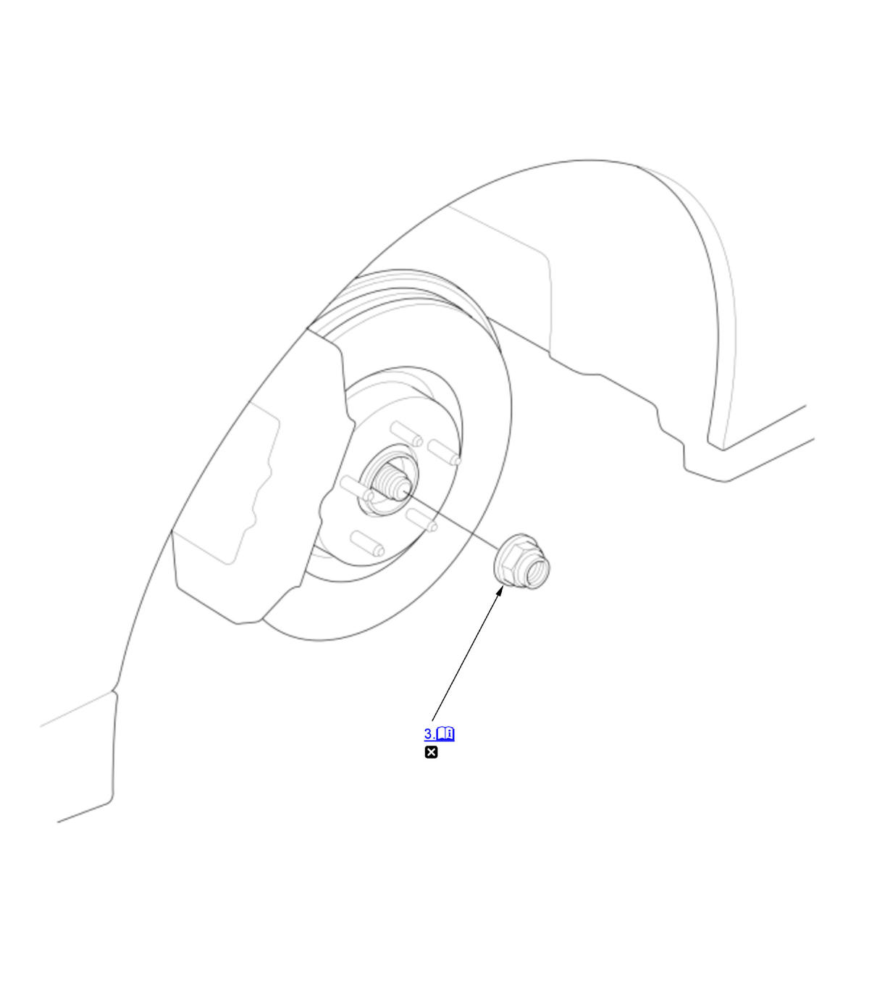
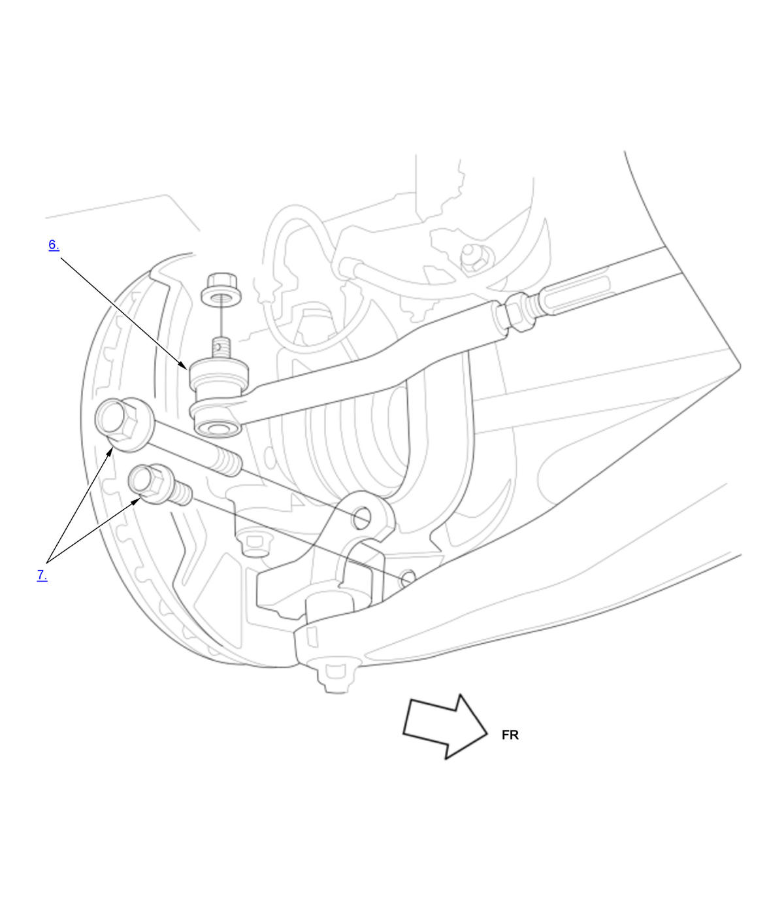
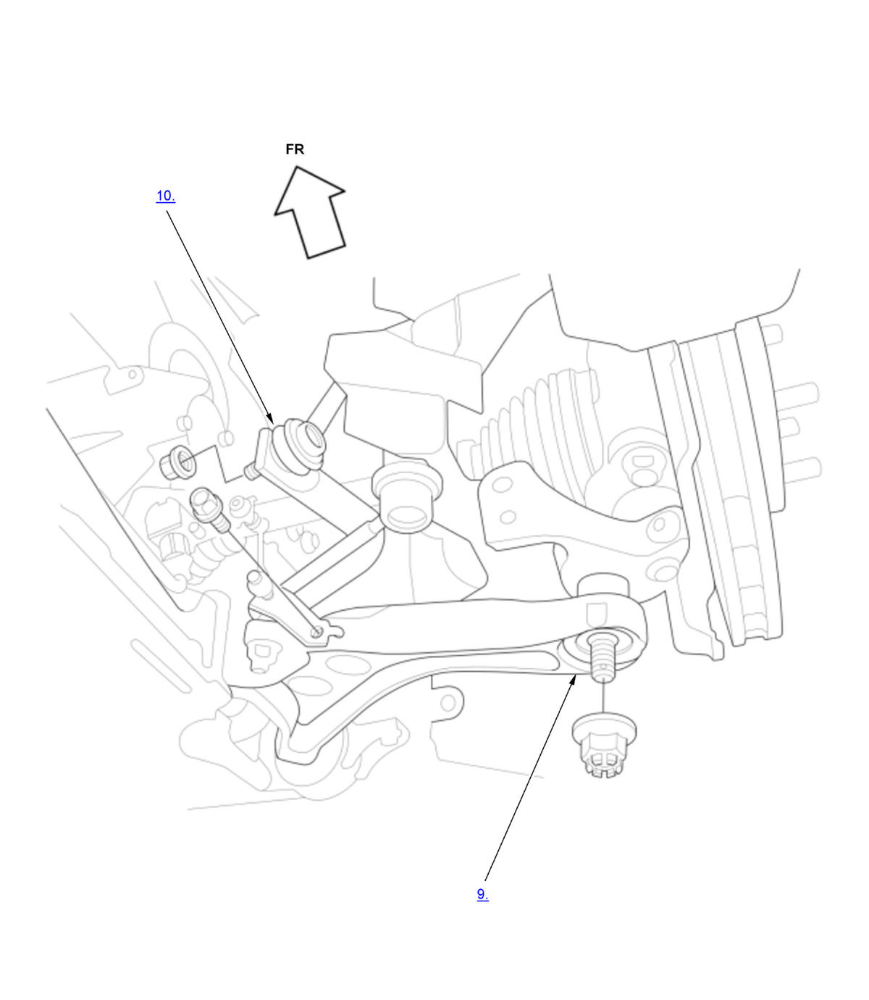
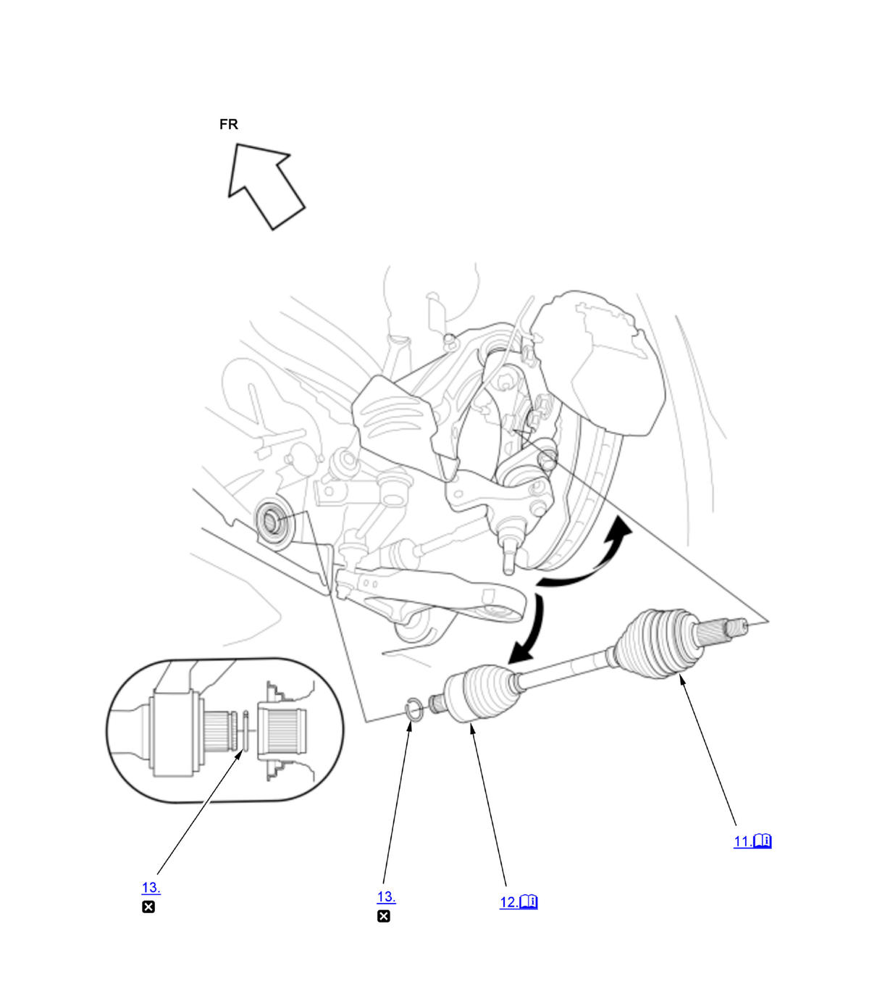

Front Driveshaft Removal and Installation (K20C1 (M/T)) (2017 2018 2019 2020 2021): Removal: Procedure
Numbered call-outs in figure pertain to list numbers in following procedure.

Courtesy of HONDA, U.S.A., INC. |
Detailed information, notes, and precautions |
 |
Replace |
Numbered call-outs in figure pertain to list numbers in following procedure.

Courtesy of HONDA, U.S.A., INC.Numbered call-outs in figure pertain to list numbers in following procedure.

Courtesy of HONDA, U.S.A., INC.Numbered call-outs in figure pertain to list numbers in following procedure.

Courtesy of HONDA, U.S.A., INC. |
Detailed information, notes, and precautions |
|
Replace |
- Vehicle - Lift
- Front Wheel - Remove (Both Side)
- Spindle Nut - Remove (Both Sides)
1. Pry up the stake (A) on the spindle nut (B). 2. Remove the spindle nut.
- Engine Undercover - Remove
NOTE: Remove the necessary part(s).
- Transmission Fluid - Drain
- Tie-Rod End Ball Joint - Disconnect (Both Sides)
- Knuckle Mounting Bolt - Remove (Both Side)
- Front Suspension Stroke Sensor - Remove (Both Sides)
- Lower Arm Ball Joint - Disconnect (Both Side)
- Lower Stabilizer Link - Disconnect (Both Sides)
- Outboard Joint - Disconnect (Both Sides)
- Inboard Joint - Disconnect (Both Sides)
Left driveshaft
1. Pry the inboard joint (A) using a pry bar.
NOTE: Be careful not to damage the oil seal or the end of the inboard joint with the pry bar.
2. Remove the driveshaft as an assembly.
NOTE: Do not pull on the driveshaft (B), or the inboard joint may come apart. Pull the inboard joint straight out to avoid damaging the oil seal.
Right driveshaft
1. Drive the inboard joint (A) off of the intermediate shaft using a drift punch and a hammer.
2. Remove the driveshaft as an assembly.
NOTE: Do not pull on the driveshaft (B), or the inboard joint may come apart. Pull the inboard joint straight out.
- Inboard Joint Set Ring - Remove (Both Side)